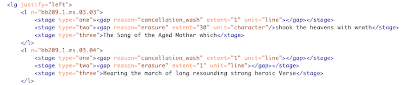

<section id="bio">
<div class="container">
    <h3>XML and Textual Modeling</h3>
    <div class="panel panel-default">
    <div class="panel-body">
        
        <p>In the history and present practice of editing William Blake, no greater challenge exists than his manuscript for <em>Vala, or the Four Zoas</em>. Its editorial legacy stretches back to the work of E. J. Ellis and W. B. Yeats at the close of the nineteenth century, and has continued, most recently, with the 1989 edition by Cettina Magno and David V. Erdman.</p>
            
        <p>In 2014 I joined the Blake Archive sub-group dedicated to developing the first digital edition of <em>Four Zoas</em>. To this date, we've worked on a revised XML schema that can model the manuscript's many layered revisions. Working with the University of Rochester's Digital Humanities Center, we are also prototyping an interactive web display that can simulate these complex layers while also transforming them into a readable format.</p>
            
        <p>Our progress is documented in a co-written article for a special issue of <em>19: Interdisciplinary Studies in the Long Nineteenth Century</em>.</p>
        
        <p>Below are links to a few associated posts written for the Blake Archive blog, the co-written article, as well as some screenshots of our work.</p>
        
        <ul>
            <li>Blog Post: <a href="https://blog.blakearchive.org/2015/01/28/four-zoas-whiteboard-edition/" target="_blank">Four Zoas: Whiteboard Edition</a></li>
            <li>Blog Post: <a href="https://blog.blakearchive.org/2016/04/19/four-zoas-in-the-zone/" target="_blank">Four Zoas: In the Zone</a></li>
            <li>Article: <a href="http://www.19.bbk.ac.uk/articles/10.16995/ntn.728/" target="_blank">Prototyping an Electronic Edition of William Blake’s Manuscript of Vala, or the Four Zoas: A Progress Report</a></li>
        </ul>
        
        <hr/>
        
        <h5>Hardcoded Prototype of <em>Four Zoas</em> Digital Edition and Revised XML Schema</h5>
        
        <blockquote>
            
        <p><a href="static/img/fz3.tif"></a></p>
            
        <hr/>
        
        <p></p>
        
        </blockquote>
        
        <p>"Stage" is one of the new elements allows us to encode and model textual layers. This screenshots shows the encoding for the first two lines of the main body of text.</p>
        
        <hr/>
        
        <h5>Animated mock-up of how users could click on a line in order to expand and contract the textual layers in the transcription.</h5>
        
        <iframe src="https://player.vimeo.com/video/145614712" width="640" height="228" frameborder="0" webkitallowfullscreen mozallowfullscreen allowfullscreen></iframe>
        
    </div>    
    </div>    
</div>    
</section>

